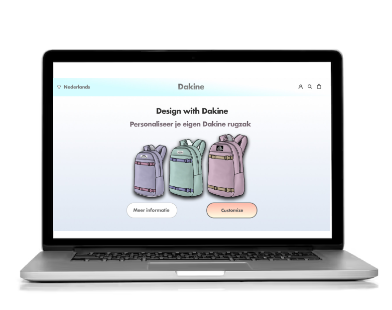
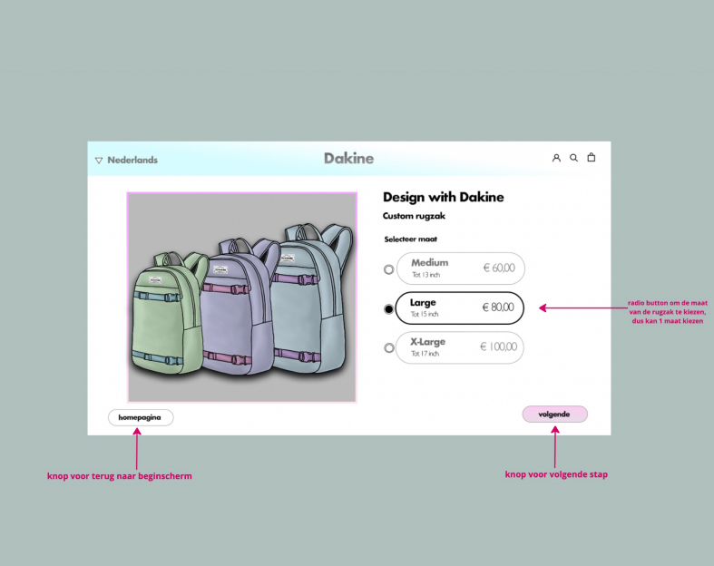
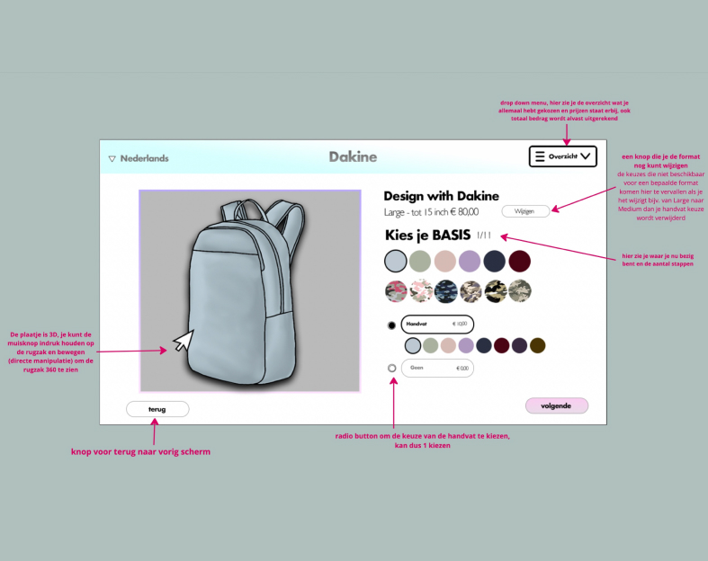

Dakine Backpack Website
Design (Adobe Illustrator)
View project ↗About this project
For this Human Computer Interaction course, I had to select three cases and design a website for each one. For the Dakine case, I created a website concept that focuses on exploring backpacks and understanding how users interact with the interface.
The goal was to not only design the visual style, but also show how the interaction flows: navigation, product browsing and key actions the user can take on the page.
Preview

